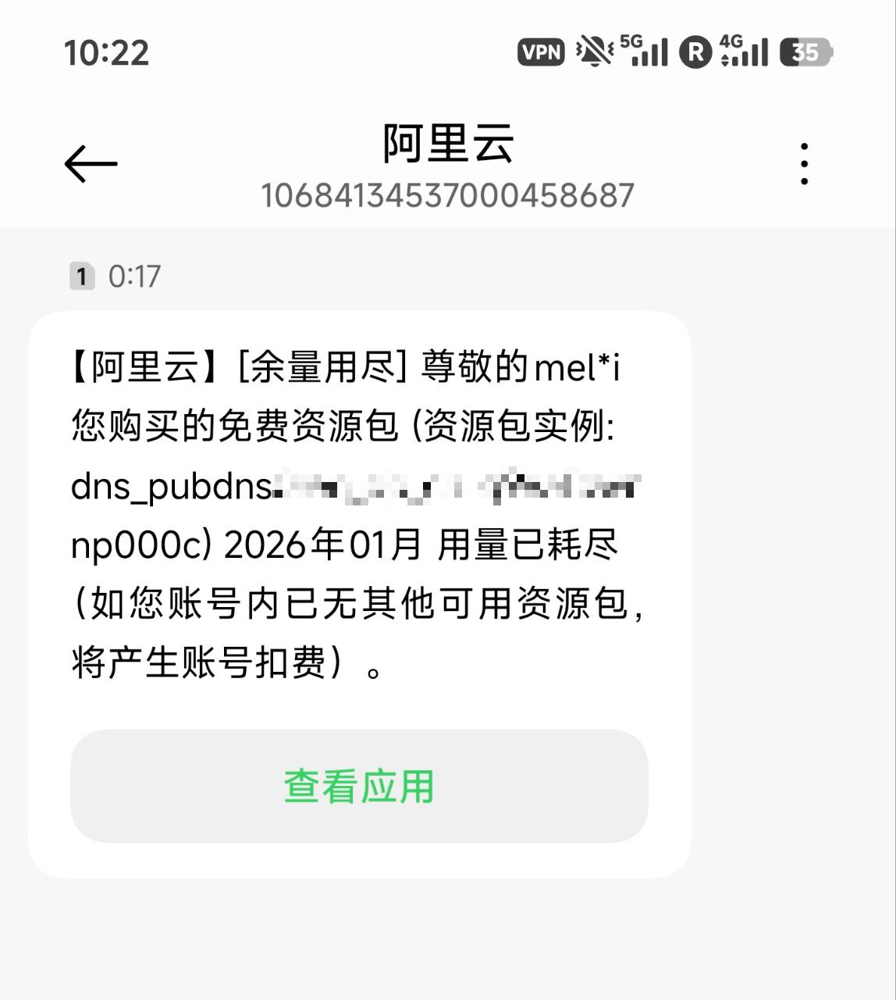
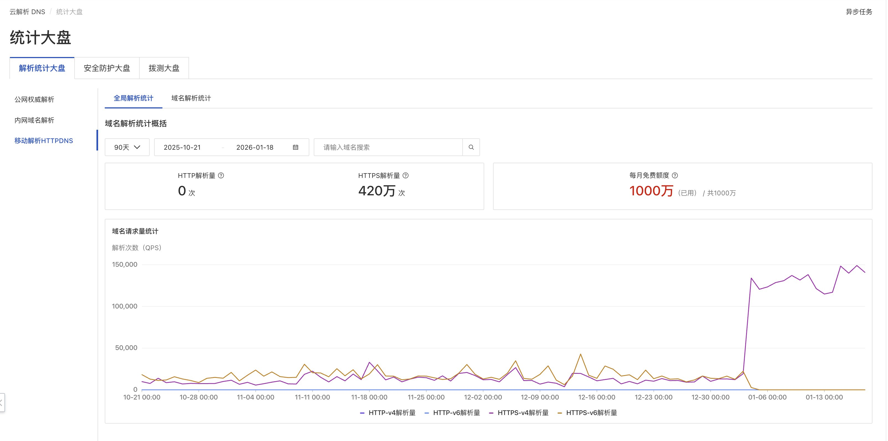

たたなこ
@tatanakots
@luoleiorg 我的家庭网络解析倒是用的全都是公共doh服务器，阿里腾讯360这些轮询负载均衡


luolei
@luoleiorg
由于某些特殊原因，我很早就对家庭网络的 DNS 进行了分流。过去，国内相关解析一直使用阿里云的私有 DOH，每月 1000 万的额度，两个账号轮流负载也足够使用。然而，今天突然收到资源耗尽的告警，才半个月额度就用完了。检查后发现，月初修改内网 DNS 配置时忘记开启缓存。😂 https://t.co/TLG6JP9JCQ